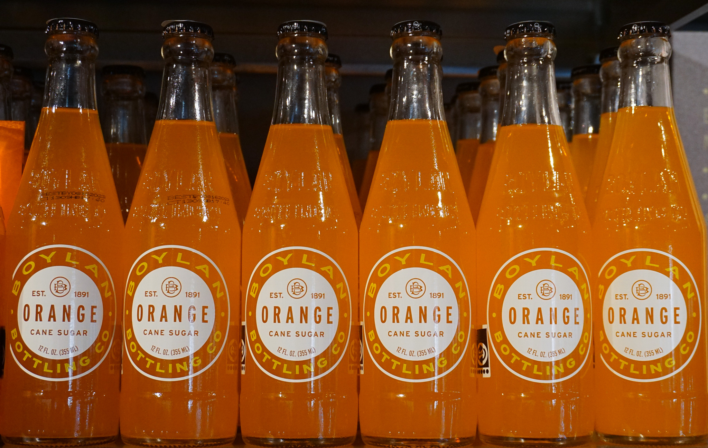

Spis Godt & Spar Penge
Madplan & Indkøb på SU

At være studerende på SU betyder ofte at balancere et stramt budget med god og sund mad. Om det er derhjemme eller på studiet, er det essentielt at få en ordentlig kost for at have de bedste betingelser for læring. Der er mange måder man kan spare på madbudgettet.
_________________________________________________________________
Budget Indkøbsmuligheder: Sådan Handler du Smart
Når du handler på SU-budget, er det vigtigt at vide, hvor du kan finde de
bedste tilbud.
Her er nogle tips til at få mest muligt ud af dine indkøb:
Sammenlign priser:
Brug din smartphone til at sammenligne priser og finde de billigste muligheder. App'en “eTilbudsavis” giver dig mulighed for at søge på bestemte varer og finder de butikker som har tilbud. Dermed kan du indrette dine indkøb efter hvor dine varer er billigst.
Brug rabatkort og studierabatter:
Mange supermarkeder tilbyder rabatkort og studierabatter. Tjek dem ud og udnyt dem til at spare penge.
Frys overskydende mad:
Mange supermarkeder tilbyder rabatkort og studierabatter. Tjek dem ud og udnyt dem til at spare penge.
Udnyt "undgå madspild":
Du har sikkert set det mange stedet. “undgå madspilds” produkter
er
en
genial måde at få varer som er ved at udløbe til en billig pris. Hvis du er kød-spiser
så
fyld evt.
fryseren med kød fra “undgå madspilds” fryseren.
Herudover findes der faktisk butikker, såsom WeFood, som sælger overskudsvarer som
ingenting
fejler, men var på vej mod containeren.
_________________________________________________________________
Madplan på SU: Din Vej til Økonomisk Madglæde
En af de mange måder at lave billig SU mad på, er ved at lave en madplan.
Din madplan kan strække sig fra 1 uge - 1 måned alt efter behov og dit køleskabs kapacitet.
How to madplan
1. Hvad vil jeg have?
Overvej hvad du vil spise til morgen, middag og aften. Sørg for at inkorporerer dine yndlingsting, så du ikke kører død i dine måltider, og selvfølgelig grønt!
2. Indkøb
Når du har udarbejdet din madplan, kan du lave en indkøbsliste baseret på de ingredienser, du får brug for. Dette hjælper dig med at undgå impulskøb og sikre, at du kun køber, hvad du rent faktisk har brug for.
3. Ryk rundt
Det smarte ved en madplan er, at alle indkøbene er gjort, og man kan derfor rykke rundt på sine retter som det passer en. Det kan være at man mandag ikke har lyst til suppe, som man ellers havde planlagt, men i stedet har lyst til lasagne som var planlagt til torsdag. Så er det heldigvis dejlig nemt at rykke rundt uden at bruge en masse ekstra tid på overvejelser og indkøb.
Med en velplanlagt SU madplan og en bevidsthed om budgetvenlige indkøbsmuligheder kan du opnå en sund og velsmagende kost, selv på SU. Og måske endda hjælpe miljøet en smule. Det handler om at være bevidst om sine valg, undgå madspild og udnytte de ressourcer, der er tilgængelige for dig.
Så spis godt, spar penge og nyd din studietid!